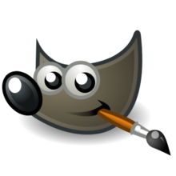
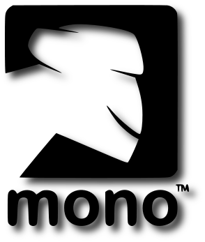
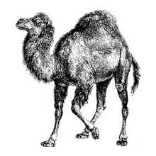

Software Libre
Definiciones Basicas
Software Libre
La definicion del software estipula los criterios que se tienen que cumplir para que un programa sea considerado libre
De vez en cuando modificamos esta definicion para clarificar o para resolver problemas sobre cuestiones delicadas
Mas abajo en esta pagina en la sección Historial, se puede consultar la lista de modicaciones que afecta la dificion de software libre
"Software Libre" es el software que respeta la libertad de los usuario y la comunidad. En grandes lineas, significa que los usuarios tienen la libertad de ejecutar, copiar, distribuir, estudiar,
modificar y mejorar el software. Es decir, el "Software Libre"es una cuestion de lebertad no de precio. Para entender el concepto, piense en "libre"como en "libre
espresion", no como en barra libre.
Un programa es software libre si los usuarios tienen las cuatro libertades esenciales:
-
La libertad de ejecutarel programa como se desea, con cualquier propósito (libertad 0)
-
La libertad de estudiarcomo funciona el programa, y cambarlo para que haga lo que usted quiera (libertad 1). el acceso al código fuentees una condicion necesaria para ello.
-
La libertad de redistribuircopias para ayudar a su prójimo (libertad 2)
-
La libertad de distribuircopias de sus versiones modificadas a terceros (libertad 3). Esto le permite ofrecer a toda la comunidad la oportunidad de beneficiarse de llas modificaciones. El acceso al codigo fuente es una condicion necesaria para ello.
La libertad para distribuir (liberadores 2 y 3)significa que usted tiene la libertad para redistribuir copias con o sin modificaciones, ya sea gratuitamente o cbrando una tarifa por la distribución, a cualquiea en cualquier
parte. Ser libre de hacer eso significa, entre otras cosas, que no tiene debe que pedir ni pagar ningun permiso para hacerlo.
Macotas del mundo del software libre
| Ñu  |
Un Ñu es el animal representativo del proyecto GNU ya que GNU significa "Ñu" en inlgles. El nombre GNU se adopto porque a la persona que comenzo el proyecto (Richard Stallman) le gustase particularmente este animal sino porque GNU es un acronimo recursivo que quiere decir "GNU's Not Unix" |
Gimp  |
Willber es la mascota de GIMP (GNU Imagen Manipulation Program) fue creada en 1997 por Thomas Knomanen y Wilber es un gimp. a menudo se confunde con un zorro o un raton pero segun su creador, Wilber es simplemente un gimp |
Tux  |
La idea de Tux surgio del propio Linea Torvalds; sefun cuenta, del pequeño le mordio un pingüino en Australia y desde entonces el parecidoa un animal simpatico, No hay origen claro del "Tux"; algunos dicen qye proviene del ingles Tuxedoque sigunifica esmoquin (siemprese ha dicho que los pingüinos van de esmoquin) y otros dicen que el nomnbre es una mezcla de Torvald con Unix |
Mono  |
Mono es tanto el nombre con el animal representativo como de un proyecto que pretende ser una implementación libre de la plataforma .Net |
Perl  |
El camello es la imagen del lenguaje Perl desde apareciese por primera vez en el libro "Programming Perl. curuisamente, el camello de Perl tiene derechos de autor (La editorial O'Reilly). |
MySql  |
El deld¡fin que es parte del logo de MySql se llama Sakila. Segun los creadores de MySql, este delfin representa los valores de la compañia y de la base de datos: rapidez, precisión, potencia y naturalidad |
Suse  |
Geeko; asi se llama el simpatico camaleon que es la mascota de la compañia alemana Suse. El nombre fue elegido tras un concurso en el que participaron miles de personas y proviene del termino Geek
(https://es.wikipedia.org/wiki/Geek
que se podria traducir al castellano como friki |